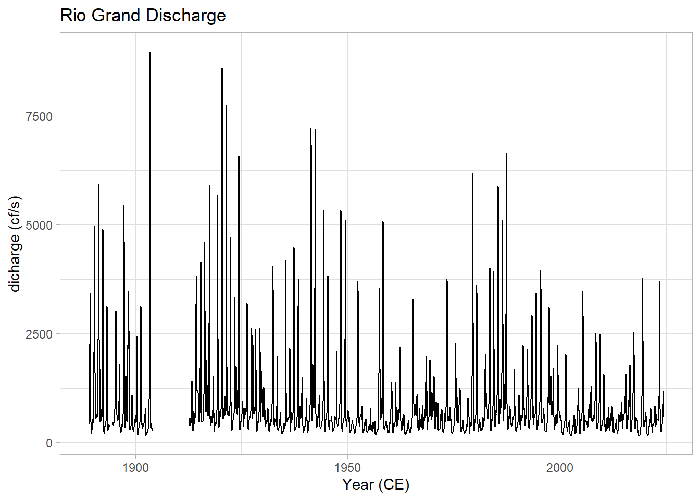
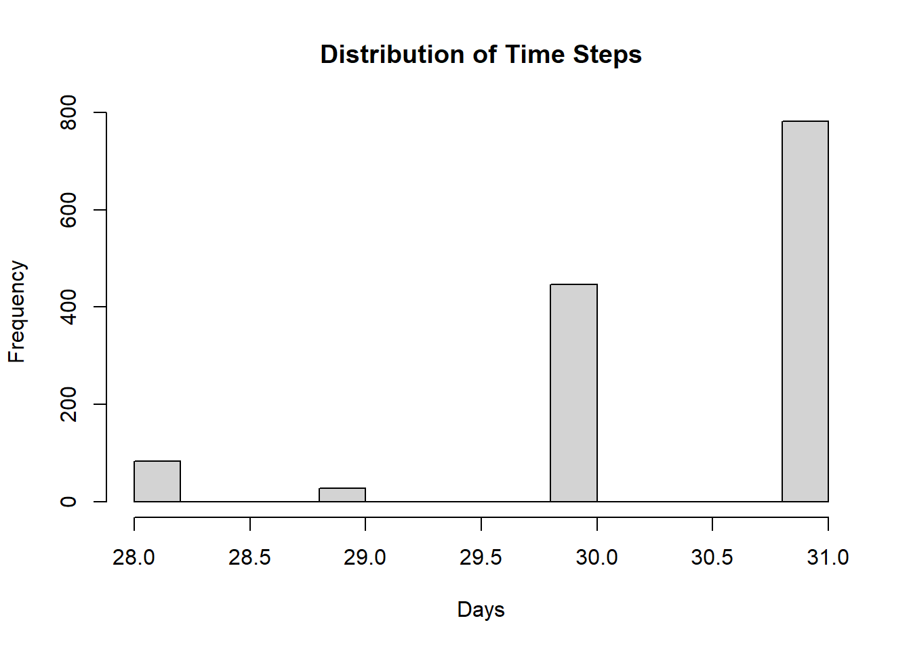
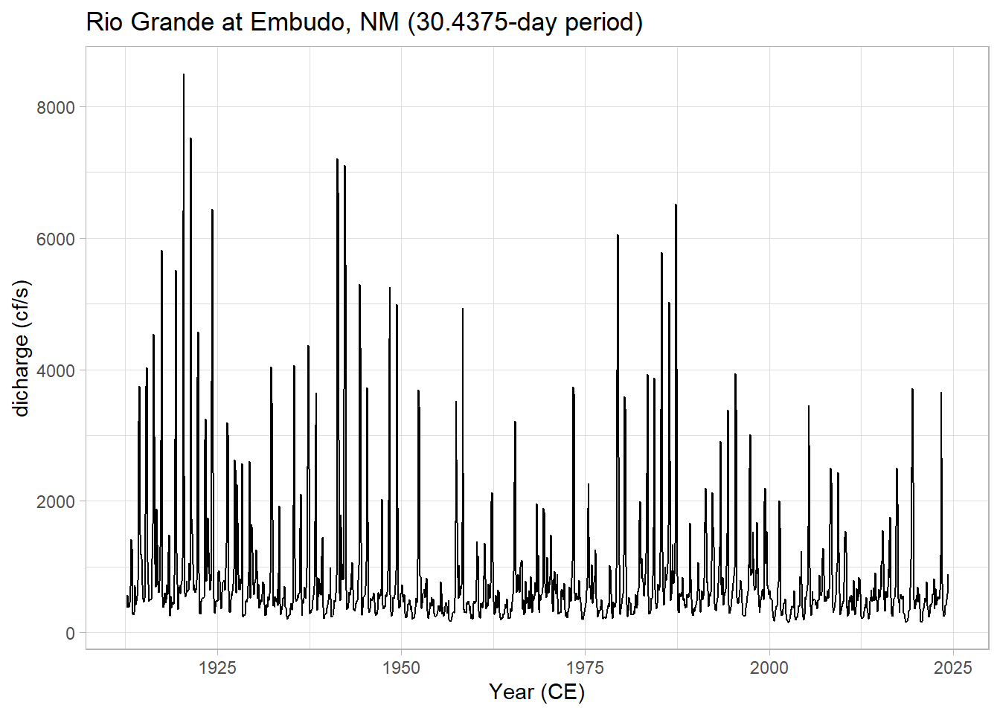

5.1 Aggregate to monthly
discharge_monthly <- df |>
group_by(Date = floor_date(ymd(df$datetime), '1 month')) |>
summarise(discharge = mean(`discharge (cf/s)`, na.rm = TRUE), .groups = 'drop')
ggplot(discharge_monthly, aes(x=Date, y=discharge)) +
labs(title = "Rio Grande at Embudo, NM (monthly)",
x="Year (CE)",
y="dicharge (cf/s)") +
geom_line() +
ggtitle("Rio Grand Discharge") +
theme_light()
5.1.1 Even sampling
## [1] "1894-03-01" "1894-04-01" "1894-05-01" "1894-06-01" "1894-07-01" "1894-08-01"
## [7] "1894-09-01" "1904-04-01" "1904-05-01" "1904-06-01" "1904-07-01" "1904-08-01"
## [13] "1904-09-01" "1904-10-01" "1904-11-01" "1904-12-01" "1905-01-01" "1905-02-01"
## [19] "1905-03-01" "1905-04-01" "1905-05-01" "1905-06-01" "1905-07-01" "1905-08-01"
## [25] "1905-09-01" "1905-10-01" "1905-11-01" "1905-12-01" "1906-01-01" "1906-02-01"
## [31] "1906-03-01" "1906-04-01" "1906-05-01" "1906-06-01" "1906-07-01" "1906-08-01"
## [37] "1906-09-01" "1906-10-01" "1906-11-01" "1906-12-01" "1907-01-01" "1907-02-01"
## [43] "1907-03-01" "1907-04-01" "1907-05-01" "1907-06-01" "1907-07-01" "1907-08-01"
## [49] "1907-09-01" "1907-10-01" "1907-11-01" "1907-12-01" "1908-01-01" "1908-02-01"
## [55] "1908-03-01" "1908-04-01" "1908-05-01" "1908-06-01" "1908-07-01" "1908-08-01"
## [61] "1908-09-01" "1908-10-01" "1908-11-01" "1908-12-01" "1909-01-01" "1909-02-01"
## [67] "1909-03-01" "1909-04-01" "1909-05-01" "1909-06-01" "1909-07-01" "1909-08-01"
## [73] "1909-09-01" "1909-10-01" "1909-11-01" "1909-12-01" "1910-01-01" "1910-02-01"
## [79] "1910-03-01" "1910-04-01" "1910-05-01" "1910-06-01" "1910-07-01" "1910-08-01"
## [85] "1910-09-01" "1910-10-01" "1910-11-01" "1910-12-01" "1911-01-01" "1911-02-01"
## [91] "1911-03-01" "1911-04-01" "1911-05-01" "1911-06-01" "1911-07-01" "1911-08-01"
## [97] "1911-09-01" "1911-10-01" "1911-11-01" "1911-12-01" "1912-01-01" "1912-02-01"
## [103] "1912-03-01" "1912-04-01" "1912-05-01" "1912-06-01" "1912-07-01" "1912-08-01"df3 <- discharge_monthly |>
dplyr::filter(Date > max(missing_vals))
hist(as.numeric(diff(df3$Date)),main = "Distribution of Time Steps", xlab = "Days")
df4 <- df3 |>
mutate(Date = decimal_date(Date)) |>
astrochron::linterp(dt=(1/12),genplot = F) |>
dplyr::filter(Date > max(missing_vals))##
## ----- APPLYING PIECEWISE-LINEAR INTERPOLATION TO STRATIGRAPHIC SERIES -----
##
## * Number of samples= 1341
## * New number of samples= 1340ggplot(df4, aes(x=Date, y=discharge)) +
labs(title = "Rio Grande at Embudo, NM (30.4375-day period)",
x="Year (CE)",
y="dicharge (cf/s)") +
geom_line() +
theme_light()
5.1.2 multi-taper
mtm1 <- mtm(df4,output = 1,verbose = F) |>
mutate(Period = 1/Frequency,
Power = Power/1000) |> #account for differing units in astrochrons MTM
dplyr::select(Period, Power)
reverselog_trans <- function(base = exp(1)) {
trans <- function(x) -log(x, base)
inv <- function(x) base^(-x)
trans_new(paste0("reverselog-", format(base)), trans, inv,
log_breaks(base = base),
domain = c(1e-100, Inf))
}
ggplot(mtm1, aes(x=Period, y=Power)) +
labs(title = "Rio Grande discharge spectrum (mtm)") +
geom_line() +
scale_y_log10() +
scale_x_continuous(trans = reverselog_trans(10),
breaks = c(100,50,20,10,5,2,1,0.5,0.2),
limits = c(100,0.2)) +
theme_light() The prominent feature is a strong annual cycle and higher-order harmonics, super-imposed on a “warm colored” background (i.e. variations at long timescales are larger than variations at short timescales). There are hints of long-term scaling as well, one in the subannual range, and one from period of 1 to 50y. We may be interested in the shape of this background, and whether it can be fit by one or more power laws.
The prominent feature is a strong annual cycle and higher-order harmonics, super-imposed on a “warm colored” background (i.e. variations at long timescales are larger than variations at short timescales). There are hints of long-term scaling as well, one in the subannual range, and one from period of 1 to 50y. We may be interested in the shape of this background, and whether it can be fit by one or more power laws.
In addition, we may be interested in interannual (year-to-year) to interdecadal (decade-to-decade) variations in streamflow. We would like to know whether the peak observed around 3-4 years in the plot above is significant with respect to a reasonable null.